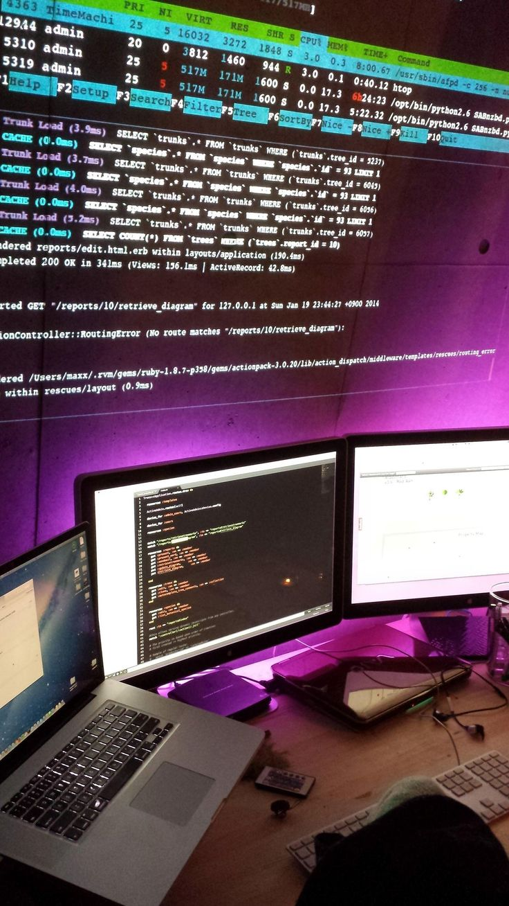

Centro de bachillerato tecnologico agropecuario
Tecnico en ofimatica |
Tecnico en agropecuario |
¿Buscas una carrera corta, práctica y con altas perspectivas laborales? ¡La carrera de Ofimática es tu mejor opción! Aquí te presentamos todo lo que necesitas saber sobre esta fascinante disciplina y por qué deberías considerarla.
¿Qué es la Ofimática?La Ofimática combina conocimientos de informática con habilidades administrativas para optimizar el trabajo de oficina mediante el uso de software especializado. Esto incluye desde la creación y gestión de documentos hasta la automatización de procesos administrativos.Duración de la CarreraUna de las mayores ventajas de la carrera de Ofimática es su corta duración. Dependiendo del programa, puedes obtener un título técnico en tan solo 3 años. Esto significa que puedes entrar al mercado laboral rápidamente y comenzar a aplicar tus conocimientos de inmediato.Perspectivas LaboralesLa Ofimática es una carrera con excelentes oportunidades laborales. Al finalizar tus estudios, estarás preparado para trabajar en una variedad de roles, tales como:• Asistente Administrativo: Soporte en tareas administrativas diarias utilizando software de oficina. • Gestor de Documentos: Administración y organización de documentos electrónicos y físicos. • Coordinador de Proyectos: Uso de herramientas ofimáticas para planificar y gestionar proyectos. • Soporte Técnico de Ofimática: Asistencia y capacitación a otros empleados en el uso de software de oficina. Además, la demanda de profesionales con habilidades en ofimática está en constante crecimiento debido a la digitalización de las empresas. Esto te brinda una gran estabilidad laboral y la posibilidad de trabajar en diversos sectores, desde corporativos hasta pequeñas empresas y organizaciones sin fines de lucro. ConclusiónLa carrera de Ofimática es ideal para aquellos que buscan una formación rápida, práctica y con excelentes perspectivas laborales. Si te interesa la tecnología y quieres desarrollar habilidades que son altamente valoradas en el mercado laboral, no dudes en considerar esta carrera. ¡Tu futuro en el mundo profesional puede comenzar en menos tiempo del que imaginas! |
¿Te apasiona la naturaleza y quieres contribuir al desarrollo sostenible? La carrera de Agropecuario puede ser la opción ideal para ti. Te presentamos una visión completa de esta carrera que combina conocimientos técnicos y prácticos en el manejo de recursos agrícolas y ganaderos, y que además ofrece una formación corta y directa al mundo laboral.
¿Qué es un Técnico Agropecuario?El Técnico Agropecuario combina conocimientos de agronomía con habilidades prácticas para optimizar la producción agrícola y ganadera. Esto incluye desde el manejo de cultivos y ganado hasta la implementación de tecnologías sostenibles en el campo.Duración de la CarreraUna de las mayores ventajas de la carrera de Técnico Agropecuario es su corta duración. Dependiendo del programa, puedes obtener un título técnico en tan solo 3 años. Esto significa que puedes entrar al mercado laboral rápidamente y comenzar a aplicar tus conocimientos de inmediato.Perspectivas LaboralesLa carrera de Técnico Agropecuario ofrece excelentes oportunidades laborales. Al finalizar tus estudios, estarás preparado para trabajar en una variedad de roles, tales como: • Supervisor de Producción Agrícola: Gestión de operaciones agrícolas y manejo de cultivos.• Técnico en Ganadería: Supervisión y cuidado de animales de granja. • Consultor Agropecuario: Asesoramiento sobre prácticas agrícolas sostenibles. • Gestor de Proyectos Agropecuarios: Planificación y ejecución de proyectos en el sector agrícola. • Operador de Maquinaria Agrícola: Manejo y mantenimiento de equipos agrícolas. Además, la demanda de profesionales con habilidades en el sector agropecuario está en constante crecimiento debido a la importancia de la agricultura en la economía global. Esto te brinda una gran estabilidad laboral y la posibilidad de trabajar en diversos entornos, desde grandes fincas hasta pequeños emprendimientos familiares. ConclusiónLa carrera de Técnico Agropecuario es ideal para aquellos que buscan una formación rápida, práctica y con excelentes perspectivas laborales. Si te interesa la agricultura y quieres desarrollar habilidades que son altamente valoradas en el mercado laboral, no dudes en considerar esta carrera. ¡Tu futuro en el mundo profesional puede comenzar en menos tiempo del que imaginas! |
|  | |